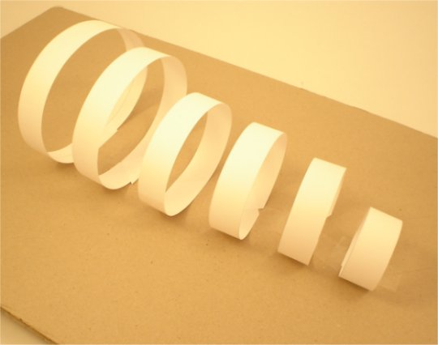
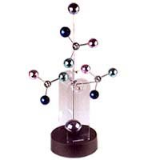

Mersul în cadenţă este mândria soldaţilor. Când trebuie însă să traverseze poduri, soldaţilor li se ordonă să "rupă" cadenţa (să evite să−şi sincronizeze paşii).
De ce oare un astfel de ordin?
Decupează dintr−o coală A3 (aproximativ 40 cm x 30 cm) de hârtie pentru copiator, benzi late de 2 cm, pe direcţii paralele cu diagonala foii.
Lipeşte împreună, cu bandă adezivă, capetele fiecărei benzi. Obţii astfel câteva bucle, cu diametre diferite.
Folosind bandă adezivă, fixează buclele paralel, la 5 cm una de alta, pe o bucată de carton tare (figura 1).

Fig. 1. Fixarea buclelor.
Ţine cartonul orizontal şi clatină−l pe diferite direcţii, cu frecvenţe diferite, încercând să păstrezi de fiecare dată aceeaşi amplitudine.
Observă mişcările buclelor şi formulează explicaţii pentru observaţiile făcute.
Clădirile au propriile frecvenţe de rezonanţă, dependente, în principal, de înălţimea clădirilor.
O regulă simplă îţi permite să estimezi rapid frecvenţa de rezonanţă a unei clădiri: aproximativ 10 Hz împărţită la numărul de etaje ale clădirii.
În 1985, un cutremur devastator a lovit Mexico City. Cea mai mare parte a energiei de vibraţie a fost transmisă clădirilor cu perioada de aproximativ 2 s.
Majoritatea clădirilor care s−au dărâmat atunci aveau între 15 şi 25 de etaje, chiar dacă alături erau clădiri mult mai înalte, sau mult mai scunde!
Cum a fost oare posibil aşa ceva?
Măsoară frecvenţa paşilor tăi, atunci când mergi "normal" (fără să te forţezi să mergi prea repede, sau prea încet).
Măsoară şi frecvenţa cu care se "leagănă" braţul tău, când stai în picioare şi îl laşi să se legene "liber", înainte şi înapoi (fără să "forţezi" un ritm prea rapid sau prea lent).
a. Găseşti vreo legătură între ritmul natural al paşilor tăi şi ritmul natural de "legănare" a braţelor tale?
b. Care persoană te aştepţi să meargă natural cu paşi mai repezi: una înaltă, sau una mai scundă? Care te aştepţi să meargă natural cu viteză mai mare?
c. De ce oare, copiii mici au tendinţa să rămână sistematic în urma adulţilor grăbiţi, care îi poartă de mână?
Cum poate oare, un singur om, să pună în mişcare amplă un clopot mare, având masa de ordinul tonei?
Ceasurile deşteptătoare pot fi programate să sune puternic la o anumită oră. În ultima vreme, s−au răspândit ceasurile deşteptătoare electronice (datorită multiplelor avantaje), în defavoarea celor mecanice.
Intră în posesia unui ceas deşteptător mecanic, care încă mai funcţionează, dar nu mai este folosit (o vizită la un atelier de ceasornicărie s−ar putea dovedi fructuoasă!).
Demontează carcasa ceasului şi observă−l în timp ce funcţionează. Încearcă să identifici rolul diverselor piese pe care le observi.
Munca la o construcţie complexă poate fi pasionantă prin ea însăşi. Dacă eşti interesat, încearcă să construieşti un ceas mecanic din materiale aflate la îndemână. Accesează aceste instrucţiuni de construcţie a unui astfel de ceas.
Satisfacţia pe care o vei avea când îl vei vedea funcţionând este nebănuită!
Dacă eşti pasionat de construcţii electronice (sau doreşti să devii!), accesează aceste instrucţiuni de realizare a unui pendul ale cărui oscilaţii sunt autoîntreţinute electronic. O simplă baterie poate menţine pendulul în oscilaţie săptămâni în şir.
De asemenea, poţi folosi acest pendul pentru a construi un ceas fucţional!
Unele jucării se mişcă neîncetat, în moduri uluitor de complexe (figura 2).
|  | Fig. 2. Jucărie cinetică. |
Este oare o astfel de jucărie un perpetuum−mobile (ceva care se mişcă la nesfârşit, fără a avea nevoie de o sursă de enrgie)?